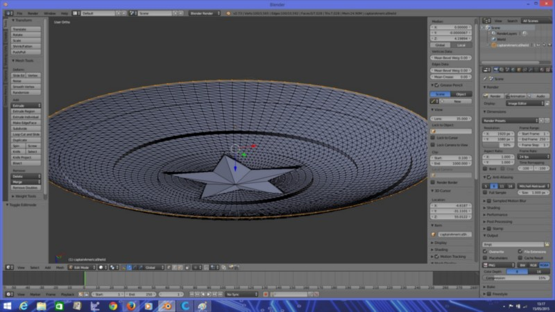
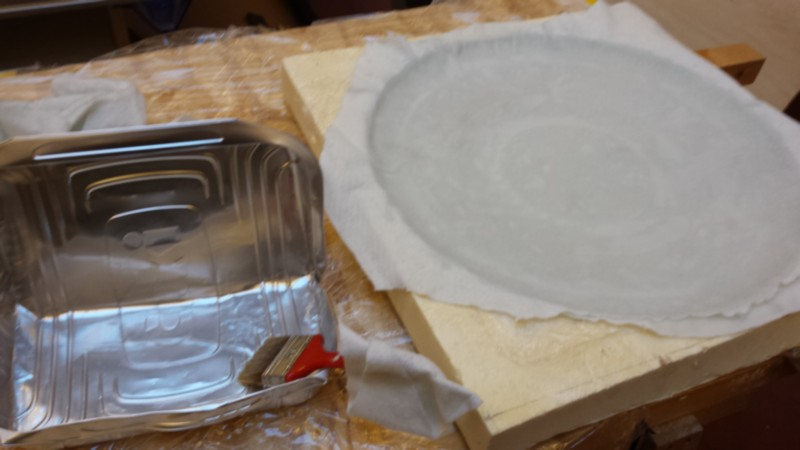
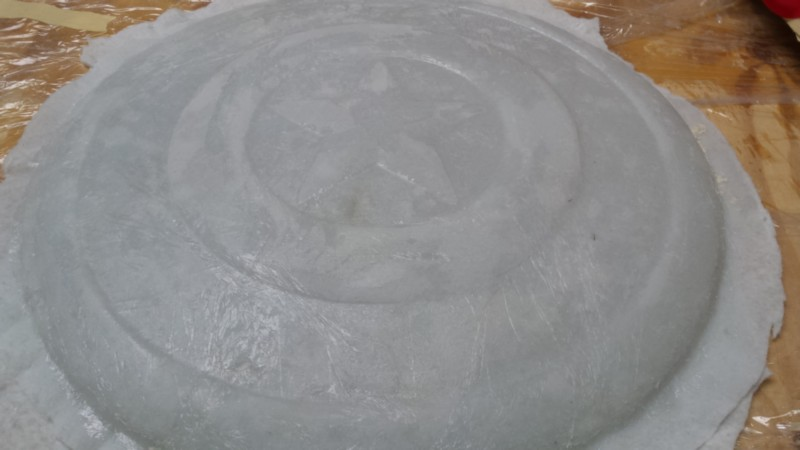
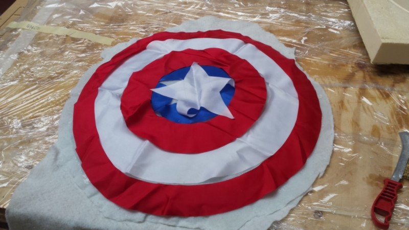
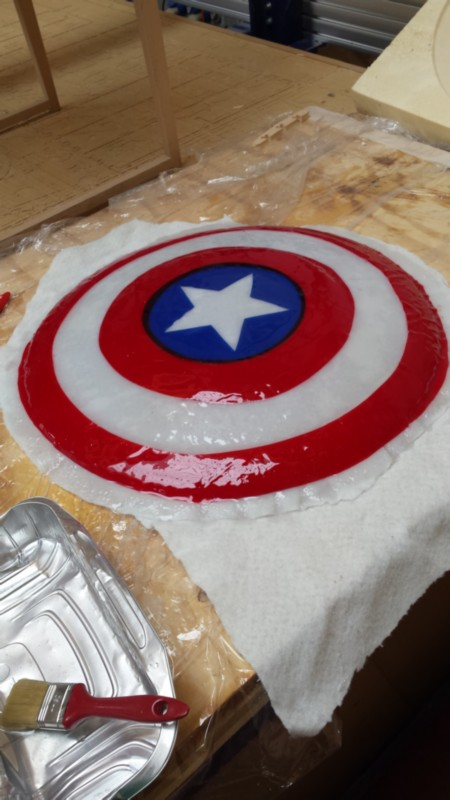
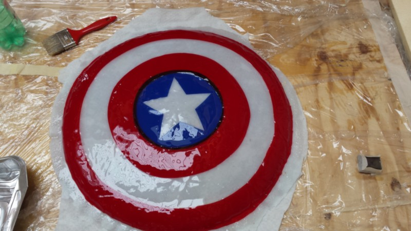
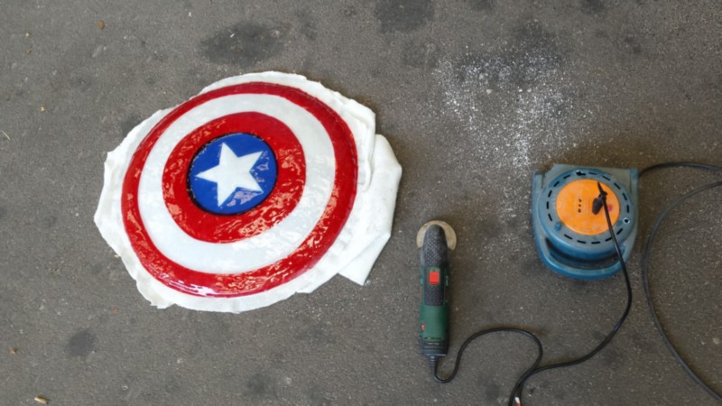
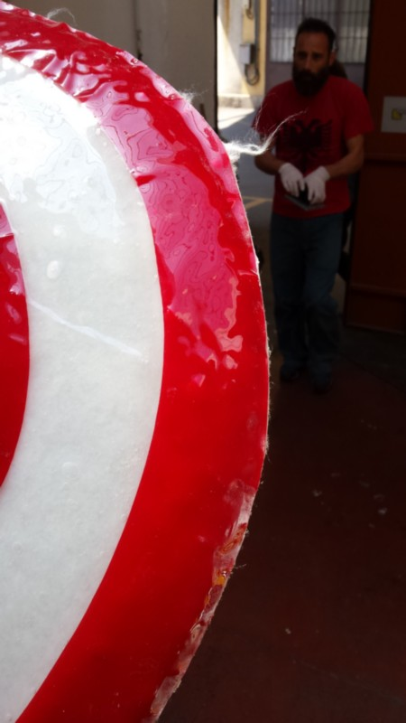
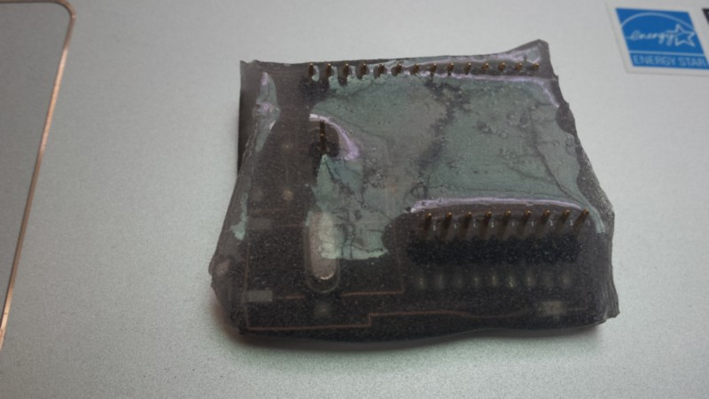

Composite
the lecture of this week is about composite material
we have to make experimentation whit resin and fibre to make strength item by combining this 2 component.
taking inspiration from marvel hero I try to build a Capitan America's shield.
i take a 3d model of the shield and fixed the geometry in blender: I delete the mesh inside to make a "single volume" solid.

after that I make a boolean subtraction to make the negative mold file for the cnc machine.
i use a foam piece about 60x60x6 cm and i engrave the 3d shape in it.
meanwhile the cnc mill was working i decide to make the shield full colour by putting some coloured tissue on it.
for this reason i buy red, blue and whit tissue and try to laser it.
I make a projection of the shield on 2d plane in rhino to make the dimension of the round and the star ready to be lasercutt, I offset a little bit the outer border to have a nice overlap of the 2 fabric.
now come the difficoult part,as i decide to make the negative side for have a nice superficial definition, there is the bad side that is that now i have to find a solution to make the resin coat well all the part and do not stick to the foam.
For this reason i try to make the foam harder and a little bit minus porous by adding some layer of vinyl glue and water and let them dry
after that i try to coat the foam whit a food plastic film using some other glue.
More to come
Download the RAR file of the project (shield, mold and laser cut fabbric pattern)
after the plastic film stick to the foam, i prepare the resin (2 part of resin and 1 or catalyst)an use a heavy cotton tissue to make the substrate whit the resin.

I take 2 big pieces of this tissue and whit the hand I make the resin penetrate in the fibre really well and also in the detail of the mold; Mattia Ciurnelli helped me in this process

The tissue was very porous so it absorbed the resin really well and become really strong.
I let it dry for 24 hours and after i take it out of the mold.
Whit the help of sand paper and a metallic brush i take off the plastic film that remains stick to the resin.

I used some other resin to make the finishing by putting the coloured fabric I laser catted before.


After the resin dry I use a electric cutter to clean the border and after i finish them whit sand paper.


At the end of the day this shield in not made of "vibranium" but it is really strong
OT
in the final part of the shield construction some resin left in my mixing case so i decided to preserv for the future generation a satshakit and i cover it of resin...
here is it...it still working
